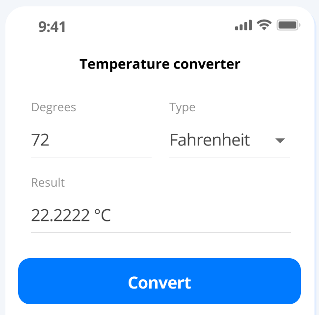

Welcome To Our Website
Hello there! Thanks for visiting our website. We're a team of passionate people who are dedicated to providing our customers with the best possible experience.We hope you enjoy your time here.

Welcome To Our Website Hello there! Thanks for visiting our website. We're a team of passionate people who are dedicated to providing our customers with the best possible experience.We hope you enjoy your time here.
|
|
|---|
 |
LANDING PAGEA landing page is one of the best web development projects for beginners. This project demands a foundational understanding of HTML and CSS. You will learn how to add columns, divide sections, arrange items, add headers, footers. Most importantly, you will use your creativity to make the page look impressive. The alignments, the padding, the color palette, boxes and all the other elements on the page require attention. Use CSS carefully to make sure the elements on the page do not overlap. |
|---|
PORTFOLIOYou can create a personal portfolio with the basic skills in CSS and HTML. This is yet again, one of the most common projects on web development for beginners. In a personal portfolio, you get to show a wide range of samples and skills and add your resume. You can add an image at the top where you can introduce yourself; below that, you can add contact information. |
|---|
|  | TEMPERATURE COVERTER WebsiteThe user will input a temperature in either Fahrenheit or Celsius and press a "convert" button. The converted temperature will then be displayed with the correct unit. Your UI should include four main elements:
|
||
|---|---|---|---|
| QUICK LINKS | |||
|---|---|---|---|
| infobyte123@gmail.com |
.png)    |
ADDRESS Delhi, India |
|